概要
Azure で SQL Server を載せる仮想マシンを追加する場合，SQL 仮想マシンを作成します。
手順
Azure のポータル画面で [SQL 仮想マシン] をクリックし [＋追加] をクリックします。
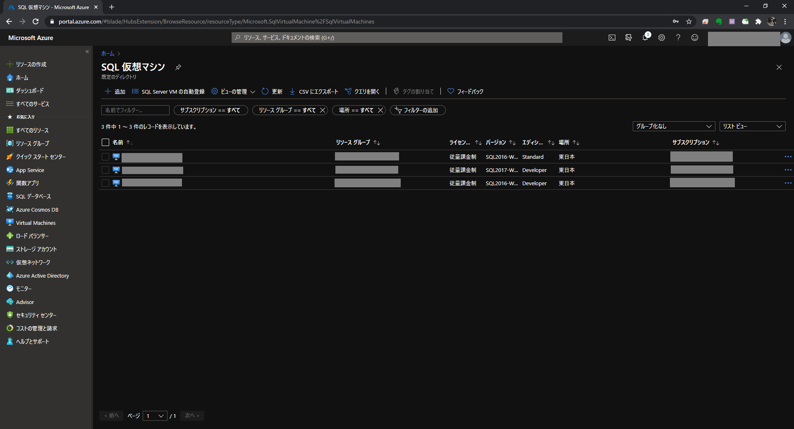
[SQL 仮想マシン] でイメージを選択し [作成] をクリックします。
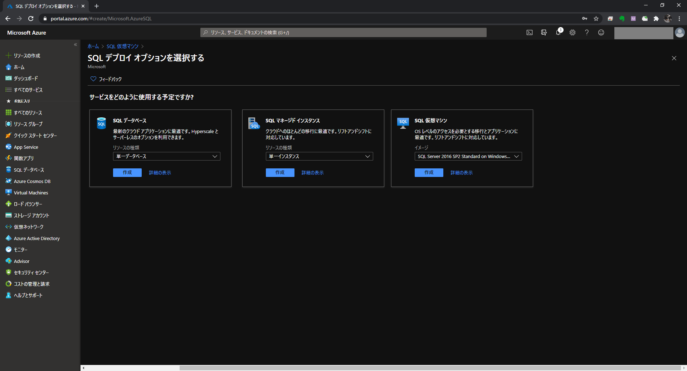
[基本] で下記内容を入力します。 ${ResourceGroupName} にはリソースグループを，${SubscriptionName} にはサブスクリプションを，${VirtualMachineName} には仮想マシン名を指定します。
| 項目 | 設定 |
|---|---|
| サブスクリプション | ${SubscriptionName} |
| リソースグループ | ${ResourceGroupName} |
| 仮想マシン名 | ${VirtualMachineName} |
| 地域 | 東日本 |
| 可用性オプション | インフラストラクチャ冗長は必要ありません |
| イメージ | 任意 |
| サイズ | 任意 |
| ユーザー名 | 任意 |
| パスワード | 任意 |
| パスワードの確認 | 任意 |
| パブリック受信ポート | なし |
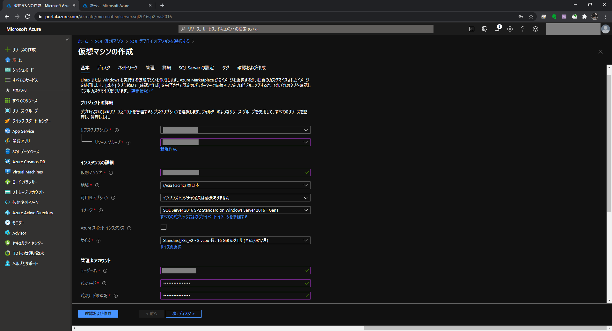 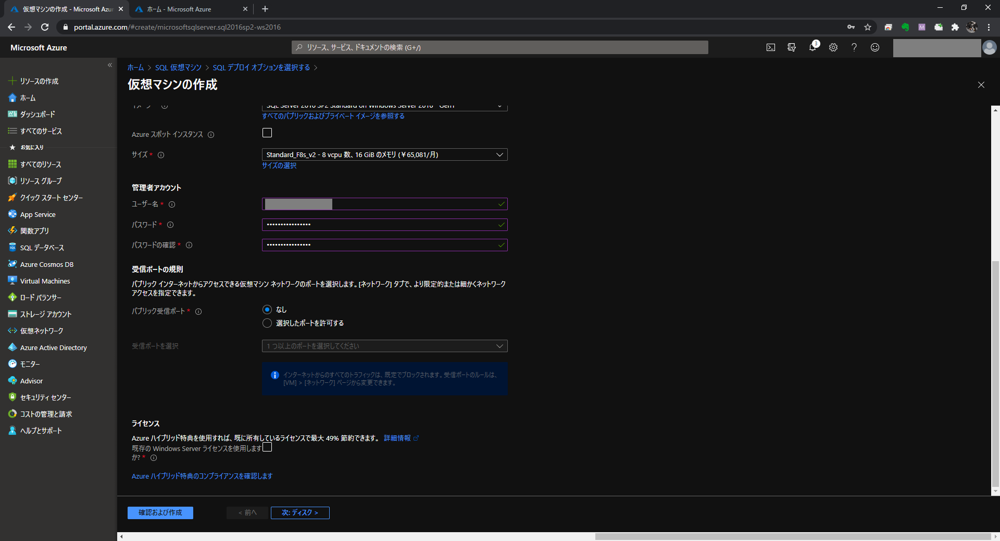
[ディスク] で下記内容を入力します。
| 項目 | 設定 |
|---|---|
| OS ディスクの種類 | 任意 |
| 暗号化の種類 | 規定 |
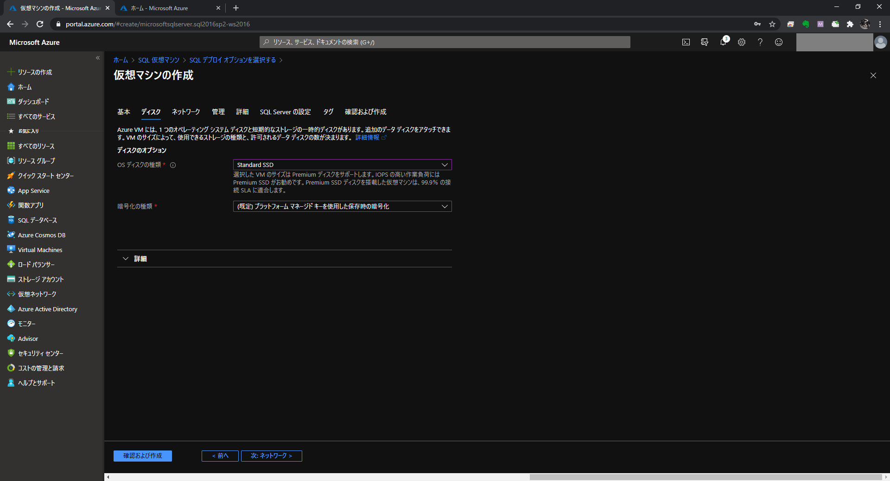
[ネットワーク] で下記内容を入力します。
${VirtualNetworkName} には仮想ネットワークを，${VirtualMachineName} には仮想マシン名を指定します。
| 項目 | 設定 |
|---|---|
| 仮想ネットワーク | ${VirtualNetworkName} |
| サブネット | default(10.0.0.0./24) |
| パブリック IP | (新規) ${VirtualMachineName}-ip |
| NIC ネットワークセキュリティグループ | Basic |
| パブリック受信ポート | なし |
| 高速ネットワーク | 有効 |
| 負荷分散 | 無効 |
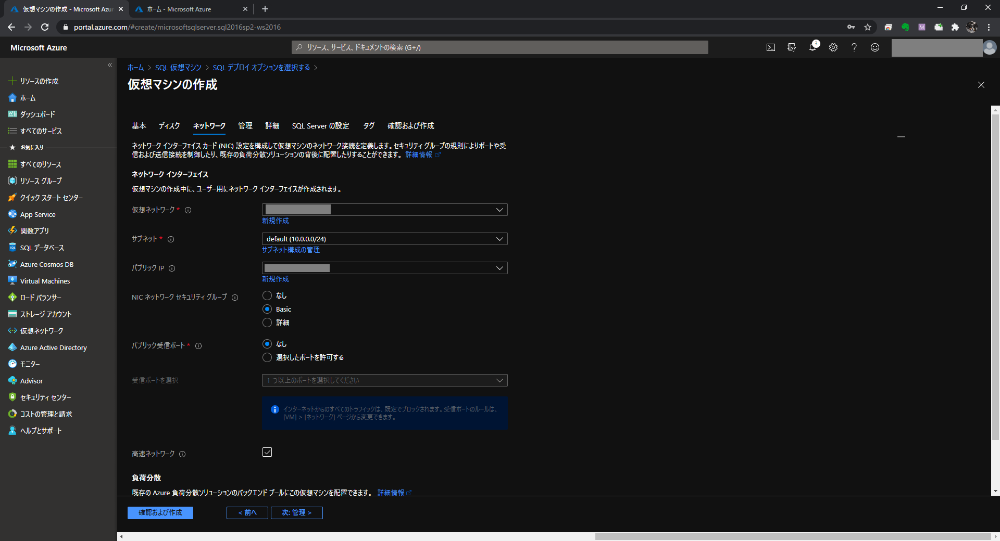 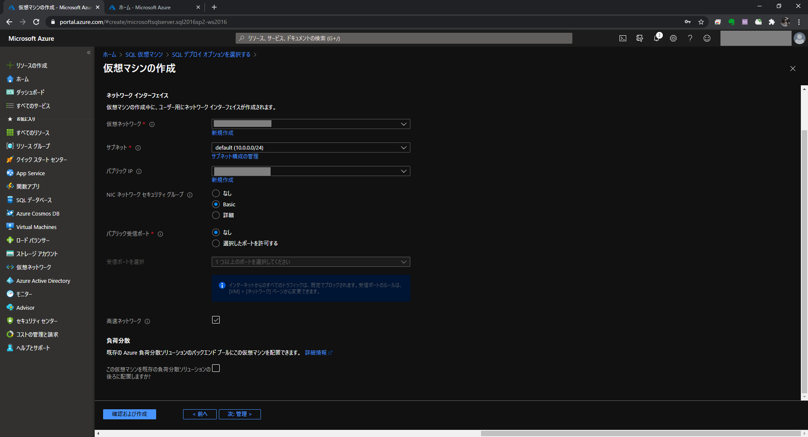
[管理] で下記内容を入力します。
| 項目 | 設定 |
|---|---|
| ブート診断 | マネージドストレージアカウントで有効にする (推奨) |
| OS のゲスト診断を有効にする | 無効 |
| システム割当マネージド ID | 無効 |
| 自動シャットダウン | 無効 |
| バックアップ | 無効 |
| パッチのインストール | OS によって調整されるパッチ |
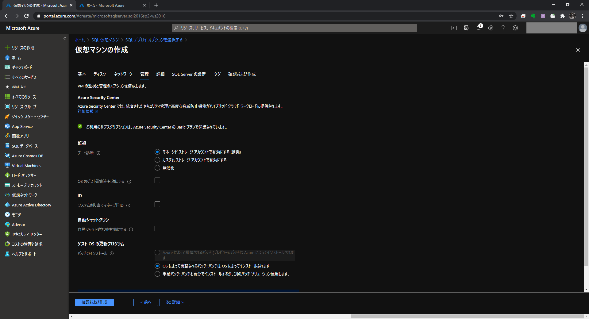
[詳細] で下記内容を入力します。
| 項目 | 設定 |
|---|---|
| ホストグループ | |
| 近接配置グループ | |
| VM の生成 | Gen 1 |
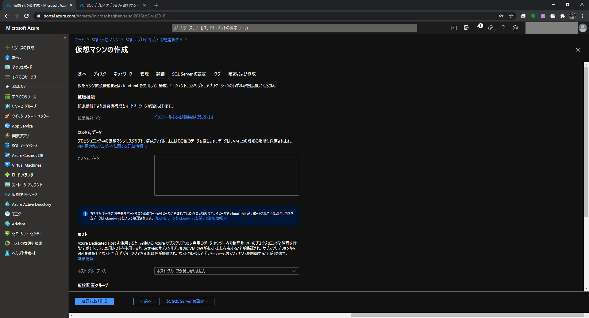 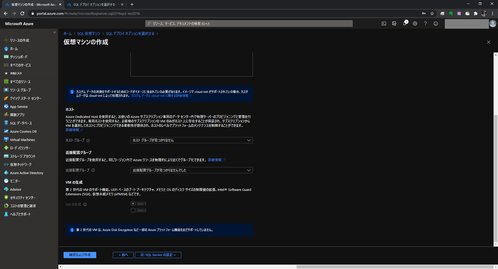
[SQL Server の設定] で下記内容を入力し
| 項目 | 設定 |
|---|---|
| SQL の接続 | プライベート (Virtual Network 内) |
| ポート | 1433 |
| SQL 認証 | 無効化 |
| Azure Key Vault の統合 | 無効化 |
| ストレージの最適化の種類 | トランザクション処理 |
| SQL Server ライセンス | いいえ |
| 自動修正 | 無効化 |
| 自動バックアップ | 無効化 |
| R Services | 無効化 |
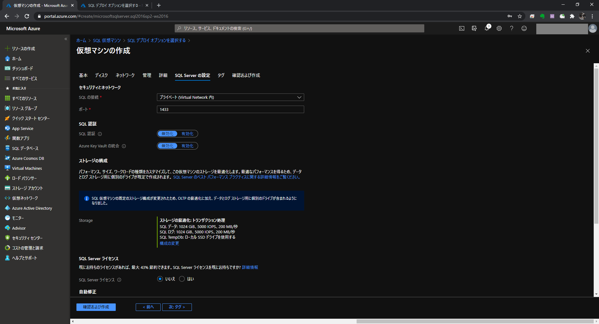 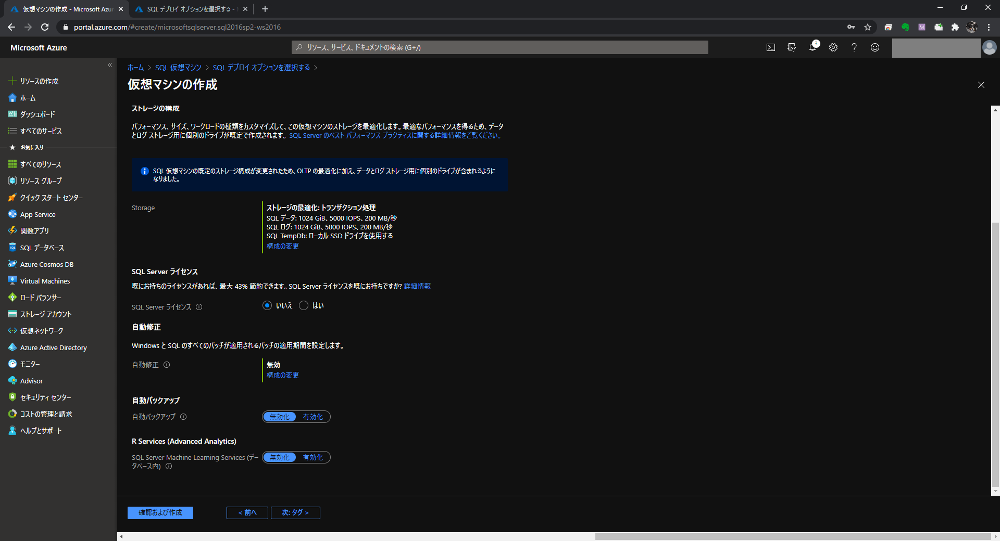
[タグ] は何も指定せず，[確認と作成] をクリックします。
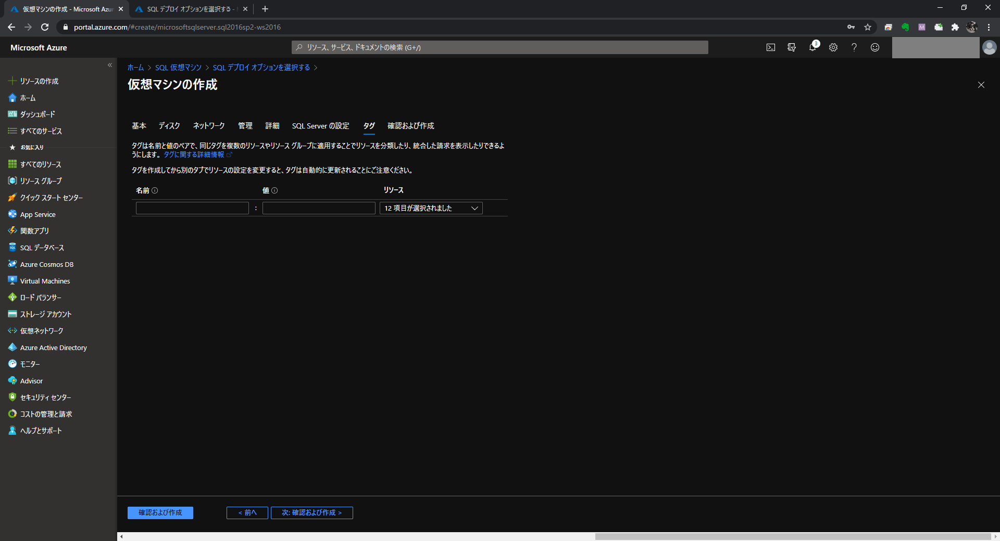
[作成] をクリックします。
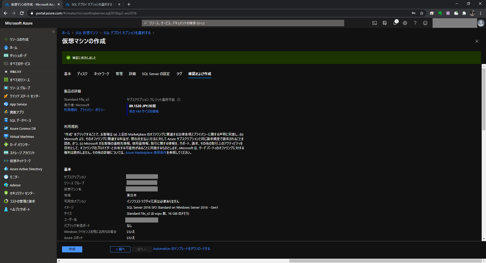 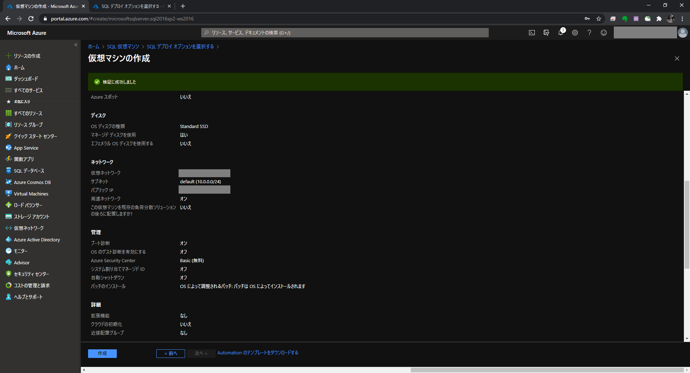 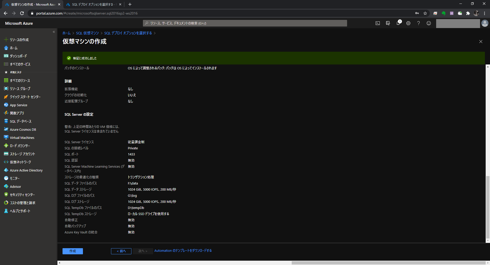 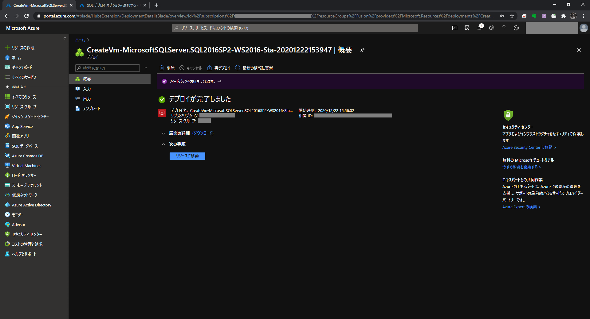 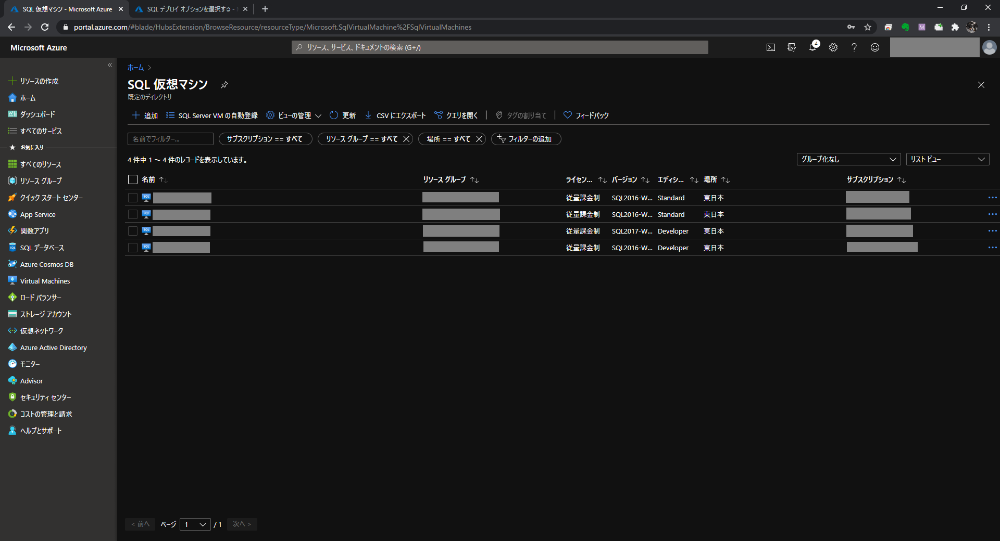